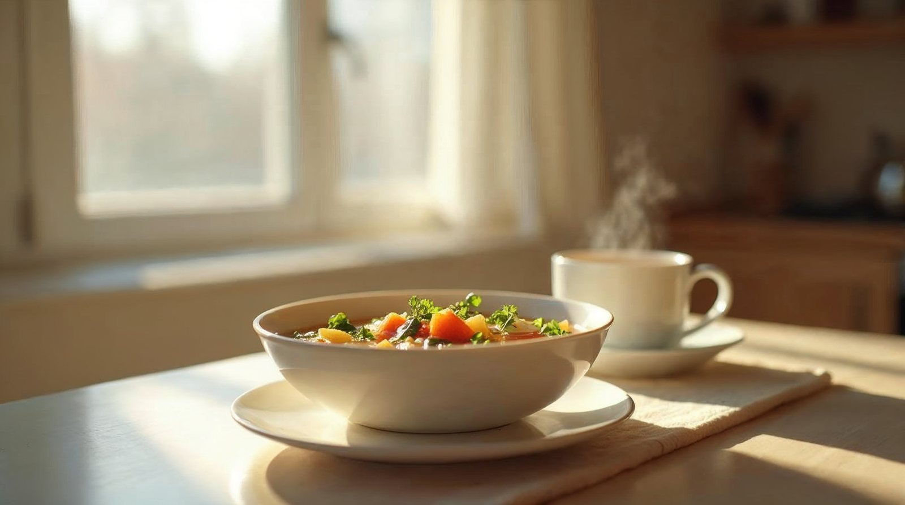

이종호 한의사 감수좋은꿈참사랑한의원 대표원장 (한의사 면허번호 19769)발행 2026-11-26 · 수정 2026-11-26
이 글의 차례
아침에 욕실 문을 닫고 조심스럽게 체중계에 올라갑니다. 어제 저녁을 거의 먹지 않았는데도 숫자는 그대로입니다. 지난달까지는 일주일에 조금씩이라도 내려가던 숫자가, 이번 달에는 한 자리에 붙박인 것처럼 움직이지 않습니다. 내려오면서 한숨이 먼저 나옵니다.
진료실에서 다이어트 이야기를 꺼내시는 분들 가운데 상당수는 처음 다이어트를 하는 분이 아닙니다. "예전에도 몇 번 뺐는데 다 돌아왔어요", "이번에는 정말 끝까지 해 보고 싶어요"라는 말씀을 자주 듣습니다. 그 말 속에는 지친 마음과 스스로를 탓하는 마음이 함께 섞여 있습니다.
저는 먼저 이 말씀을 드립니다. 요요와 정체기는 의지가 약해서 생기는 일이 아니라, 몸이 줄어든 먹거리에 맞춰 스스로를 지키려는 반응과 깊이 닿아 있다고요. 그래서 더 굶거나 더 몰아붙이는 쪽보다, 몸이 버틸 수 있는 속도와 방법을 찾는 쪽이 오래갑니다.
이 글에서는 요요와 정체기가 무엇인지, 왜 생기는지, 그리고 생활에서 먼저 바꿔 볼 것과 한의원에서 함께 살필 수 있는 부분을 차례로 정리해 보겠습니다.
요요와 정체기는 어떻게 다른가요
정체기는 체중을 줄이는 도중에 숫자가 한동안 멈추는 시기를 말합니다. 먹는 양과 움직임은 그대로인데 몇 주째 숫자가 거의 변하지 않는 상태입니다. 다이어트를 하는 분이라면 대부분 한 번쯤은 겪는 흔한 과정입니다.
요요는 줄였던 체중이 다시 원래대로, 때로는 그보다 더 늘어나는 것을 말합니다. 다이어트를 멈춘 뒤 몇 달 사이에 서서히 돌아오는 경우가 많고, 빼고 늘고를 여러 번 되풀이하는 분도 계십니다.
두 가지는 따로 떨어진 이야기가 아닙니다. 정체기에서 지쳐 먹는 양을 갑자기 더 줄이거나, 반대로 포기하고 원래 식습관으로 돌아가면서 요요로 이어지는 경우가 많습니다. 그래서 정체기를 어떻게 지나가느냐가 요요를 막는 첫 갈림길이 됩니다.
왜 정체기와 요요가 생길까요
몸은 먹는 양이 갑자기 줄면 쓰는 에너지도 조금씩 줄이려 합니다. 덜 들어오니 덜 쓰는 쪽으로 맞추는 것입니다. 체중이 줄면 몸을 움직이는 데 드는 에너지 자체도 줄어들어, 처음과 같은 식사량이어도 줄어드는 속도는 느려집니다.
- 너무 적게 먹어 근육까지 함께 빠진 경우
- 굶다가 몰아 먹는 날이 반복되는 경우
- 잠이 짧거나 자주 깨서 식욕이 흔들리는 경우
- 몸을 움직이는 시간이 다이어트 뒤 오히려 줄어든 경우
- 긴장이나 우울감이 커져 단것을 찾게 되는 경우
- 생리 주기나 계절에 따라 몸의 물이 오르내리는 경우
이 가운데 근육이 함께 빠지는 일은 특히 중요합니다. 근육은 가만히 있어도 에너지를 쓰는 조직이라, 근육이 줄면 몸이 쓰는 기본 에너지도 함께 줄어듭니다. 그 상태에서 식사를 원래대로 돌리면 체중이 금세 돌아오기 쉽습니다.
배고픔과 포만감을 조절하는 신호도 함께 흔들립니다. 오래 적게 먹으면 배고픔은 더 크게, 배부름은 더 늦게 느끼게 되는 경우가 많습니다. 다이어트를 멈춘 뒤 이전보다 더 많이 먹게 되는 것은 의지의 문제가 아니라 몸의 신호가 그렇게 기울어 있기 때문일 수 있습니다.
숫자가 멈췄다고 몸이 멈춘 것은 아닙니다
체중은 지방만이 아니라 물, 근육, 장 속 내용물까지 모두 더한 숫자입니다. 짠 음식을 먹은 다음 날, 생리 전, 운동을 새로 시작한 직후에는 몸에 물이 머물러 숫자가 오히려 오르기도 합니다.
그래서 저는 체중계 숫자 하나보다 허리둘레, 옷이 맞는 느낌, 계단을 오를 때의 숨, 아침에 일어날 때의 개운함을 함께 보시라고 권합니다. 체중은 그대로인데 허리둘레가 줄고 있다면, 몸은 분명히 움직이고 있는 것입니다.
숫자는 하루 단위가 아니라 일주일 평균으로 보시는 편이 좋습니다. 매일 오르내리는 숫자에 마음이 흔들리면 결국 무리한 단식이나 포기로 이어지기 쉽습니다. 같은 요일, 같은 시각, 같은 조건으로 재서 흐름을 보세요.
정체기에 흔히 하는 실수는 무엇인가요
정체기가 오면 많은 분들이 먹는 양을 더 줄입니다. 한 끼를 아예 건너뛰거나, 저녁을 굶거나, 물만 마시는 날을 만듭니다. 며칠은 숫자가 조금 움직일 수 있지만, 몸은 더 강하게 에너지를 아끼는 쪽으로 기울고 배고픔도 더 커집니다.
또 하나는 갑자기 운동량을 크게 늘리는 것입니다. 평소 걷지 않던 분이 하루 두 시간씩 운동을 시작하면 며칠 만에 무릎이나 발목이 아프고, 결국 운동도 식사 조절도 함께 멈추게 되는 경우가 있습니다.
원푸드 식단이나 특정 음식만 끊는 방법도 마찬가지입니다. 처음에는 빨리 빠지는 것 같아도 오래 이어 가기 어렵고, 멈추는 순간 이전 식사로 한꺼번에 돌아가기 쉽습니다.
정체기는 오히려 지금까지의 방법을 점검할 시간입니다. 단백질은 충분한지, 잠은 어떤지, 주말에 몰아 먹지는 않는지를 차분히 돌아보는 쪽이 더 멀리 가는 길입니다.
한의학에서는 요요를 어떻게 보나요
한의학에서는 같은 체중이라도 몸의 바탕이 다르면 살이 찌고 빠지는 방식도 다르다고 봅니다. 몸이 잘 붓고 무거우며 아침에 손가락이 뻣뻣한 분, 열이 위로 오르고 입이 마르며 야식이 당기는 분, 쉽게 지치고 손발이 차며 소화가 더딘 분은 같은 식단을 해도 반응이 다르게 나타납니다.
그래서 진료실에서는 몇 킬로그램을 빼느냐보다 어떤 몸이 어떤 식으로 흔들리는지를 먼저 봅니다. 붓기가 많은 분이라면 짠맛과 물 마시는 습관, 저녁 식사 시각을 먼저 살피고, 쉽게 지치는 분이라면 굶는 끼니를 줄이고 잠을 챙기는 쪽을 먼저 권합니다.
몸이 지친 상태에서 억지로 빼면 빠지는 동안에도 힘들고, 멈춘 뒤에는 더 쉽게 돌아옵니다. 그래서 먼저 몸이 버틸 수 있는 바탕을 살피고, 그 위에서 식사와 움직임을 조절하는 순서를 권합니다.

마음이 흔들리는 날의 식사
요요를 겪은 분들께 가장 많이 듣는 이야기는 "참다가 한 번 무너지면 그날은 다 먹게 된다"는 말씀입니다. 하루 실수가 일주일 포기로 이어지는 일이 반복되면서 체중도 마음도 함께 무거워집니다.
이럴 때는 완벽한 하루를 목표로 삼기보다, 무너진 다음 끼니를 평소대로 돌아오는 연습이 더 쓸모 있습니다. 많이 먹은 다음 날 굶어서 메우려 하지 말고, 그냥 평소의 아침을 드시면 됩니다. 그 한 끼가 다시 리듬을 붙잡아 줍니다.
먼저 이렇게 여쭙니다
처음 오시면 저는 대략 이런 순서로 여쭙니다. 미리 생각해 오시면 이야기가 수월해집니다.
- 지금까지 다이어트를 몇 번, 어떤 방법으로 해 보셨나요?
- 가장 많이 뺐을 때와 다시 늘었을 때는 언제였나요?
- 하루 끼니 시각과 간식, 야식은 어떠신가요?
- 잠드는 시각과 깨는 시각, 밤에 깨는 횟수는 어떠신가요?
- 드시는 약이나 다이어트 보조제, 영양제가 있나요?
- 생리 주기가 다이어트 이후 달라지지는 않았나요?
가족 가운데 갑상선 질환이나 당뇨를 앓으신 분이 있는지도 함께 여쭙니다. 최근 받으신 건강검진 결과지가 있다면 혈당, 콜레스테롤, 간 수치를 함께 볼 수 있어 도움이 됩니다.
정확하게 기억나지 않으셔도 괜찮습니다. 대략적인 흐름만 알아도 몸이 어떤 방식으로 반응해 왔는지 짐작할 수 있습니다.
일상에서 먼저 해 볼 수 있는 것
요요를 줄이는 길은 빨리 빼는 것보다 천천히, 그리고 다시 돌아가지 않을 방법으로 빼는 것에 가깝습니다. 아래 가운데 지금 가장 쉬운 것 하나부터 골라 보세요.
- 끼니마다 단백질 반찬 한 가지를 먼저 챙기기
- 굶는 끼니를 없애고 세 끼 시각을 일정하게 맞추기
- 밥은 반 공기부터 줄이되 채소 반찬은 넉넉히
- 일주일에 두세 번은 가벼운 근력 운동 더하기
- 잠드는 시각을 일정하게, 잠은 7시간 안팎 챙기기
- 주말 하루 몰아 먹는 날 대신 평소보다 조금 넉넉한 끼니로
근력 운동은 거창할 필요가 없습니다. 의자에 앉았다 일어나기, 벽 짚고 팔굽혀 펴기, 계단 오르기처럼 집에서 할 수 있는 동작이면 충분합니다. 근육을 지키는 것이 요요를 막는 가장 든든한 바탕이 됩니다.
목표 체중에 닿은 뒤에도 바로 원래 식사로 돌아가지 마세요. 몇 주에 걸쳐 조금씩 양을 늘리며 체중이 유지되는 선을 찾는 시간이 필요합니다. 빼는 기간만큼 지키는 기간을 계획해 두시면 마음이 한결 편해집니다.
먹는 속도도 함께 보세요. 배부르다는 신호는 먹기 시작하고 한참 뒤에야 머리에 닿습니다. 한 끼를 10분 안에 마치는 분이라면 숟가락을 내려놓는 시간을 두어 15분에서 20분 정도로 늘려 보세요. 같은 양을 먹어도 배부름을 더 일찍 느끼게 됩니다.
마시는 것도 놓치기 쉽습니다. 달달한 커피, 과일 주스, 탄산음료, 저녁의 맥주 한 캔은 배는 채우지 않으면서 하루 섭취를 슬며시 늘립니다. 음료 하나를 물이나 보리차로 바꾸는 것만으로도 정체기의 숫자가 다시 움직이기 시작하는 분들이 계십니다.
체중계에는 너무 자주 오르지 마세요. 매일 아침 숫자에 하루 기분이 좌우된다면 일주일에 한두 번, 같은 요일 같은 조건으로만 재셔도 충분합니다. 대신 허리둘레를 한 달에 한 번 함께 적어 두시면 흐름이 더 또렷하게 보입니다.
한의원에서 함께 살필 수 있는 경우
- 다이어트를 할 때마다 같은 자리에서 멈추고 다시 늘어나는 경우
- 적게 먹는데도 몸이 무겁고 잘 붓는 경우
- 식사를 줄이면 잠이 얕아지고 예민해지는 경우
- 긴장하거나 지치면 단것과 야식이 당기는 경우
- 다이어트 이후 생리 주기나 소화가 흔들린 경우
좋은꿈참사랑한의원에 오시면 체중 숫자보다 먼저 지금의 몸 상태를 봅니다. 맥을 짚고, 잠과 소화, 대소변, 붓기와 손발 온도를 여쭤 몸이 어떤 쪽으로 기울어 있는지 살핍니다. 필요하다고 판단되면 인바디로 근육과 체지방의 흐름도 함께 봅니다.
진찰한 내용을 바탕으로 식사 리듬과 움직임에서 바꿔 볼 것 하나를 정하고, 침이나 한약 상담 가운데 지금 상태에 맞는 것을 함께 정합니다. 한약을 상의할 때는 드시는 약을 모두 확인한 뒤 신중히 정하며, 임신 중이거나 임신을 준비 중이라면 먼저 알려 주시고 산부인과와 상의하시도록 안내합니다.
갑상선 질환이나 당뇨처럼 체중에 영향을 주는 병으로 치료 중이시라면 그 진료는 처방한 병원에서 그대로 이어 가셔야 합니다. 드시는 약은 상의 없이 멈추지 않습니다. 한의원 진료는 그 곁에서 생활 리듬과 몸의 불편을 함께 살피는 자리입니다.
이렇게 기록해 오시면 상담이 쉬워집니다
2주 정도만 간단히 적어 와 주세요. 숫자와 생활을 나란히 놓으면 정체의 이유가 보이기 시작합니다.
- 일주일에 한두 번, 같은 조건에서 잰 체중과 허리둘레
- 끼니 시각과 대략의 메뉴, 간식과 야식
- 잠든 시각과 깬 시각
- 걷거나 운동한 시간
- 생리 시작일과 붓기가 심했던 날
- 단것이 유난히 당겼던 날과 그날의 기분
기록은 잘 먹었는지 못 먹었는지를 평가하려는 것이 아닙니다. 어떤 날 몸이 흔들리는지를 찾아내는 지도라고 생각해 주세요.
다시 시작하는 마음에 대해
요요를 여러 번 겪으신 분일수록 다시 시작하는 것을 두려워하십니다. 또 실패할까 봐, 또 돌아올까 봐요. 그 마음을 충분히 이해합니다.
하지만 이전의 다이어트들이 헛된 것은 아니었습니다. 어떤 방법이 몸에 맞지 않았는지, 어느 지점에서 지쳤는지를 이미 알고 계시니까요. 이번에는 조금 느리더라도 오래 지킬 수 있는 방법을 함께 찾아보면 됩니다.
이번 주에는 딱 하나만 정해 보세요. 아침을 거르지 않기, 저녁 음료를 물로 바꾸기, 의자에서 일어나기 열 번. 무엇이든 괜찮습니다. 그 하나가 몸에 붙으면 다음 하나를 더하면 됩니다. 다음에 오시면 기록을 함께 펼쳐 놓고 몸이 어떻게 답했는지부터 살펴보겠습니다.
이런 증상은 먼저 확인이 필요합니다
- 노력하지 않았는데도 몇 달 사이 체중이 크게 줄면서 식은땀이나 열이 나는 경우
- 갑자기 숨이 차고 다리가 심하게 부으며 체중이 며칠 사이 빠르게 늘어나는 경우
이런 신호가 있으면 한의원보다 가까운 병원이나 응급실을 먼저 찾으세요.
함께 읽으면 좋은 글
- 체중이 더 이상 줄지 않는 정체기에는 무엇을 먼저 점검하나요?
- 다이어트 상담에서는 무엇을 확인하나요?
- 비만이라는 말을 들었을 때 체중보다 먼저 무엇을 살피나요?
- 체중은 정상인데 인바디에서 근육량이 적게 나왔다면 무엇부터 살피나요?
- 혈압약·당뇨약을 먹고 있다면 다이어트 상담 전에 무엇을 알려야 하나요?

여쭙는 것
- 지금까지 다이어트를 몇 번, 어떤 방법으로 해 보셨나요?
- 가장 많이 뺐을 때와 다시 늘었을 때는 언제였나요?
- 하루 끼니 시각과 간식, 야식은 어떠신가요?
생활에서 해 볼 것
- 끼니마다 단백질 반찬 한 가지를 먼저 챙기기
- 굶는 끼니를 없애고 세 끼 시각을 일정하게 맞추기
- 밥은 반 공기부터 줄이되 채소 반찬은 넉넉히
한의원에서 함께 살필 것
- 다이어트를 할 때마다 같은 자리에서 멈추고 다시 늘어나는 경우
- 적게 먹는데도 몸이 무겁고 잘 붓는 경우
- 식사를 줄이면 잠이 얕아지고 예민해지는 경우
먼저 확인이 필요한 신호
- 노력하지 않았는데도 몇 달 사이 체중이 크게 줄면서 식은땀이나 열이 나는 경우
- 갑자기 숨이 차고 다리가 심하게 부으며 체중이 며칠 사이 빠르게 늘어나는 경우
한눈에 보는 표
| 구분 | 핵심 |
|---|---|
| 여쭙는 것 | 지금까지 다이어트를 몇 번, 어떤 방법으로 해 보셨나요? 가장 많이 뺐을 때와 다시 늘었을 때는 언제였나요? |
| 생활에서 해 볼 것 | 끼니마다 단백질 반찬 한 가지를 먼저 챙기기 굶는 끼니를 없애고 세 끼 시각을 일정하게 맞추기 |
| 한의원에서 함께 살필 것 | 다이어트를 할 때마다 같은 자리에서 멈추고 다시 늘어나는 경우 적게 먹는데도 몸이 무겁고 잘 붓는 경우 |
| 먼저 확인이 필요한 신호 | 노력하지 않았는데도 몇 달 사이 체중이 크게 줄면서 식은땀이나 열이 나는 경우 갑자기 숨이 차고 다리가 심하게 부으며 체중이 며칠 사이 빠르게 늘어나는 경우 |
자주 묻는 질문
정체기에는 먹는 양을 더 줄여야 하나요?
갑자기 더 줄이면 몸이 에너지를 더 아끼는 쪽으로 기울고 배고픔도 커지기 쉽습니다. 먼저 단백질과 잠, 주말 식사를 점검하고 움직임을 조금 더하는 쪽을 권합니다.
정체기는 보통 얼마나 가나요?
사람마다 다릅니다. 몇 주 이어지기도 하니 체중계 숫자만 보지 말고 허리둘레와 몸의 느낌을 함께 기록해 흐름을 보시는 것이 좋습니다.
요요가 오지 않으려면 목표 체중 뒤에 무엇을 해야 하나요?
바로 원래 식사로 돌아가지 말고 몇 주에 걸쳐 조금씩 양을 늘리며 체중이 유지되는 선을 찾으세요. 근력 운동은 계속 이어 가시는 편이 좋습니다.
다이어트 보조제를 먹고 있는데 한약 상담을 받아도 되나요?
드시는 보조제와 약을 모두 가져와 주시면 함께 확인하고 신중히 정합니다. 성분이 겹치거나 맞지 않을 수 있어 미리 알려 주시는 것이 중요합니다.
좋은꿈참사랑한의원은 재진 때 지난번 이야기부터 이어서 여쭙니다. 진료시간과 예약은 오시는 길에서 확인하세요.
어디서 상담받을 수 있나요?
좋은꿈참사랑한의원은 서울 동작구 만양로2길 2 신성빌딩 3층·5층(서울 동작구 상도동, 7호선 상도역 3번 출구 근처)에 있습니다. 한의사 3명(이종호 대표원장, 조영기 수석진료원장, 정원영 진료원장)이 진료합니다. 진료시간은 평일 09:30~20:00(점심 13:00~14:00), 토·일·공휴일 09:30~15:00이며, 방문 전 전화로 확인을 권합니다. 예약은 네이버 예약, 카카오톡 상담, 전화 02-815-7510로 받습니다.
이 글은 일반적인 건강 정보이며 개인의 진단이나 치료를 대신하지 않습니다. 증상이 있거나 복용 중인 약이 있다면 진료를 통해 확인하세요. 치료 효과는 개인마다 다를 수 있습니다.
작성 기준: 일반적으로 알려져 있는 건강 정보를 참고해 정리했습니다(대표원장 감수). 증상 기록은 1~2주 동안 하루 1회, 비슷한 시간에 적어 오시면 지난 상태와 비교하기 쉽습니다.